คู่มือคนขับรถ
เว็บไซต์ https://schoolbuslampang.com · ปรับปรุง 24 ต.ค. 2569 · ภาพในคู่มือเป็นข้อมูลตัวอย่าง ไม่ใช่ข้อมูลจริง
คู่มือนี้สำหรับใคร และทำอะไรได้บ้าง
สำหรับคนขับรถรับส่งนักเรียน ใช้บนมือถือได้สะดวกที่สุด
- ตรวจรถก่อนออกทุกวัน
- เช็กชื่อนักเรียนขึ้น-ลงรถ และบันทึกนักเรียนลา
- ส่งตำแหน่งรถระหว่างเดินรถ
- แจ้งเหตุฉุกเฉิน
- ใส่รายชื่อเด็กในรถ และแนบเอกสารรถกับใบขับขี่
- แก้ข้อมูลของตัวเอง และเปลี่ยนรหัสผ่าน
เมนูบนมือถือ: แถบล่างมี 4 ปุ่ม คือ หน้าแรก · รายชื่อเด็ก · ฉุกเฉิน · โปรไฟล์ เมนูอื่นอยู่ในปุ่ม ☰ มุมซ้ายบน
💡 เคล็ดลับ: เพิ่มเว็บไซต์ไว้ที่หน้าจอหลักของมือถือ (เมนูของเบราว์เซอร์ → "เพิ่มลงในหน้าจอหลัก") จะเปิดได้เหมือนแอป
เริ่มต้นใช้งาน
เข้าสู่ระบบ
- เปิด https://schoolbuslampang.com
- ช่อง ชื่อผู้ใช้หรือทะเบียนรถ พิมพ์ทะเบียนรถของคุณ เช่น นข 2210 ลำปาง
- พิมพ์รหัสผ่าน
- กด เข้าสู่ระบบ
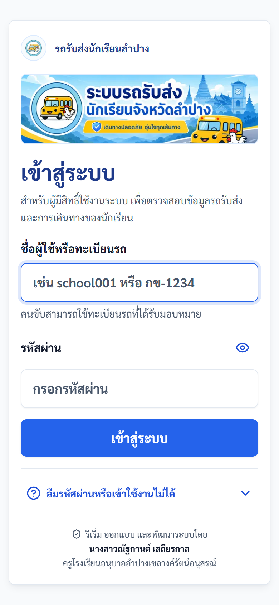
ภาพ: หน้าเข้าสู่ระบบบนมือถือ
- ชื่อผู้ใช้คืออะไร: ทะเบียนรถที่โรงเรียนบันทึกไว้ เว้นวรรคและขีดให้ตรงตามนั้น
- ยังไม่มีรหัสผ่าน: ขอจากเจ้าหน้าที่โรงเรียนที่คุณรับส่งนักเรียน
- ลืมรหัสผ่าน: คุณตั้งรหัสใหม่เองไม่ได้ ให้แจ้งเจ้าหน้าที่โรงเรียน โรงเรียนจะประสานผู้ดูแลระบบตั้งรหัสใหม่ให้ (ปุ่ม ลืมรหัสผ่านหรือเข้าใช้งานไม่ได้ ใต้ปุ่มเข้าสู่ระบบ จะบอกช่องทางติดต่อเท่านั้น)
ถ้าระบบให้เปลี่ยนรหัสผ่าน
ถ้าขึ้นข้อความ กรุณาเปลี่ยนรหัสผ่านเริ่มต้น ระบบจะพาไปหน้าเปลี่ยนรหัสผ่านเอง
- พิมพ์รหัสใหม่ อย่างน้อย 8 ตัวอักษร
- พิมพ์รหัสใหม่อีกครั้งให้ตรงกัน
- กดบันทึก แล้วเข้าสู่ระบบใหม่ด้วยรหัสใหม่
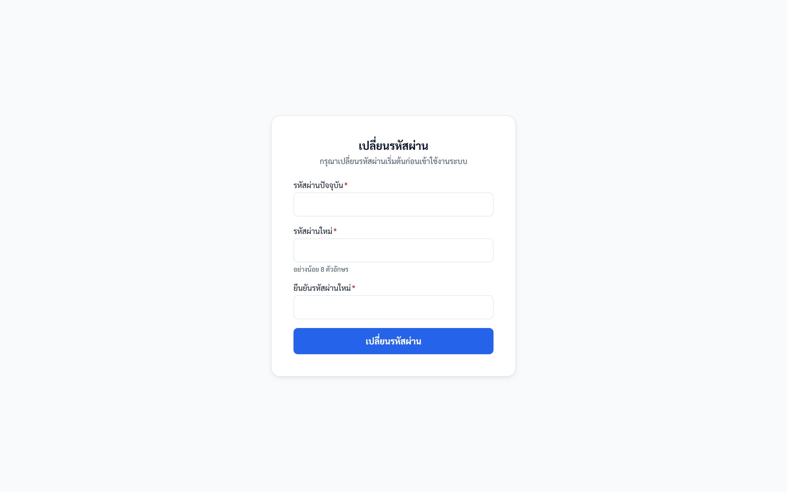
ภาพ: หน้าเปลี่ยนรหัสผ่าน
⚠️ ระวัง: รหัสใหม่ต้องไม่ง่ายเกินไป (เช่น 12345678) ต้องไม่ใช่ทะเบียนรถ และต้องไม่ซ้ำรหัสเดิม
ถ้าคุณยังใช้รหัสเดิมที่ได้รับตอนเริ่มระบบ ให้เปลี่ยนเองทันที ระบบอาจไม่บังคับให้เปลี่ยน (วิธีเปลี่ยนดูหัวข้อ "เปลี่ยนรหัสผ่าน" ด้านล่าง)
ถ้าขึ้นว่า "บัญชีนี้ยังไม่ได้ผูกกับรถ"
แปลว่าเข้าสู่ระบบได้แล้ว แต่ระบบยังไม่รู้ว่าคุณขับรถคันไหน จึงยังเช็กชื่อไม่ได้
- แจ้งโรงเรียน พร้อมบอกชื่อผู้ใช้และทะเบียนรถที่ขับ
- เมื่อโรงเรียนผูกให้แล้ว กด ตรวจสอบอีกครั้ง หรือเข้าสู่ระบบใหม่
งานประจำวัน (ทำตามลำดับ)
- ตรวจรถก่อนออก — วันละครั้ง ก่อนเช็กชื่อ
- เริ่มส่งตำแหน่งรถ — ก่อนออกรถ
- เช็กชื่อนักเรียน — ทุกรอบ เช้าและเย็น (บันทึกการลาที่นี่ด้วย)
- จบรอบ — เมื่อนักเรียนลงรถครบ
- หยุดส่งตำแหน่ง — เมื่อเลิกเดินรถ
เกิดเหตุร้ายเมื่อไร กดปุ่มแดง ฉุกเฉิน ได้ทันที (ดูหัวข้อ "แจ้งเหตุฉุกเฉิน")
1. ตรวจรถก่อนออก
เปิดหน้าแรกครั้งแรกของวัน หน้าต่าง ตรวจรถก่อนออก จะขึ้นมาเอง มี 6 รายการ: ยางรถ/ลมยาง · ไฟหน้า-ไฟท้าย · กระจก/กระจกมองข้าง · เบรก · เข็มขัดนิรภัย/ที่นั่ง · ความสะอาดภายในรถ
- ตรวจรถจริงทั้ง 6 รายการ
- ถ้าปกติทุกอย่าง กด ทุกรายการปกติ — ออกได้ (ปุ่มเขียว)
- ถ้ามีอย่างใดผิดปกติ กด มีรายการผิดปกติ (ปุ่มเหลือง)
- กดเลือกรายการที่ผิดปกติ
- พิมพ์รายละเอียด เช่น "ยางหลังขวาลมอ่อน"
- กด บันทึกรายการผิดปกติ
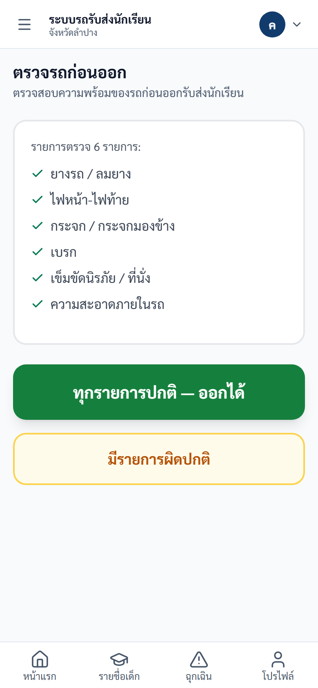
ภาพ: หน้าต่างตรวจรถก่อนออก
ทำเสร็จแล้วจะเห็น: ป้าย ตรวจสภาพรถแล้ว บนหน้าแรก และเริ่มเช็กชื่อได้
ℹ️ ถ้าบันทึกว่ามีรายการผิดปกติพร้อมรายละเอียด ระบบจะแจ้งผู้เกี่ยวข้องให้เอง
2. เริ่มส่งตำแหน่งรถ
การ์ด ส่งตำแหน่งรถ อยู่บนสุดของหน้าแรก
- กด เริ่มส่งตำแหน่ง
- ถ้ามือถือถามขอใช้ตำแหน่ง ให้กดยอมให้ใช้
- ดูป้ายมุมขวาของการ์ด ต้องขึ้นว่า กำลังส่งตำแหน่ง
- เลิกเดินรถแล้ว กด หยุดส่งตำแหน่ง
ทำเสร็จแล้วจะเห็น: เวลาอัปเดตล่าสุด และความแม่นยำ (เป็นเมตร) ใต้ปุ่ม
ℹ️ ระบบส่งตำแหน่งเฉพาะตอนที่คุณกดเริ่ม ถ้าปิดเบราว์เซอร์ ออกจากระบบ หรือเปิดหน้าใหม่ การส่งจะหยุด ต้องกด เริ่มส่งตำแหน่ง ใหม่
3. เช็กชื่อนักเรียน
ระบบเลือกรอบให้เองตามเวลา ดูที่การ์ดบนหน้าแรก: โหมดส่งเช้า หรือ โหมดรับเย็น
ถ้านักเรียนขึ้นรถครบทุกคน:
- กด นักเรียนขึ้นรถครบทุกคน (… คน) (ปุ่มเขียวใหญ่)
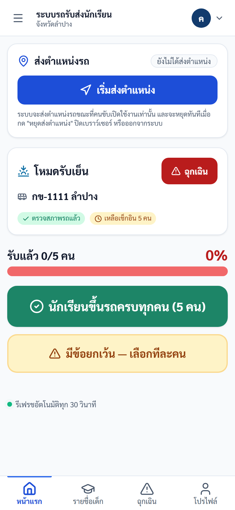
ภาพ: หน้าแรกบนมือถือ — ปุ่มเขียว "นักเรียนขึ้นรถครบทุกคน" และปุ่มเหลือง "มีข้อยกเว้น — เลือกทีละคน"
ถ้ามีบางคนไม่มา หรือลา:
- กด มีข้อยกเว้น — เลือกทีละคน (ปุ่มเหลือง)
- รายชื่อจะแสดงแยกตามโรงเรียน ใต้หัวข้อ รอดำเนินการ
- คนที่มา กดปุ่ม ส่งถึงโรงเรียน (รอบเช้า) หรือ รับกลับบ้าน (รอบเย็น) ที่ชื่อเด็ก
- คนที่ลา กดปุ่ม ลา แล้วเลือก ลาเช้า / ลาเย็น / ลาทั้งวัน
- อยากกลับไปหน้าปุ่มใหญ่ กด ← กลับโหมดรวม
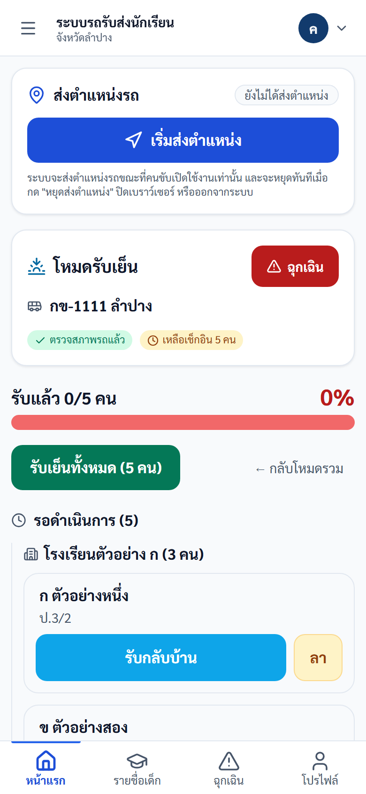
ภาพ: เช็กชื่อทีละคน (รอบเย็น) — แต่ละชื่อมีปุ่ม "รับกลับบ้าน" และ "ลา"
ทำเสร็จแล้วจะเห็น: ชื่อเด็กย้ายไปอยู่ใต้หัวข้อ เสร็จแล้ว (ป้าย "ส่งแล้ว" หรือ "รับแล้ว") คนลาอยู่ใต้หัวข้อ ลาวันนี้
- บันทึกลาผิด: ที่ชื่อเด็กในหัวข้อ ลาวันนี้ กด ยกเลิกการลา แล้วกด ยกเลิกการลา อีกครั้งเพื่อยืนยัน
- เห็นป้าย ครูยืนยันแทนแล้ว ที่ชื่อเด็ก: โรงเรียนบันทึกให้แล้ว ไม่ต้องทำอะไรเพิ่ม
- ครูที่โรงเรียนก็เช็กชื่อได้ ถ้าครูบันทึกเด็กคนนั้นไปก่อน คุณกดซ้ำจะขึ้นว่า รายการนี้ถูกบันทึกไปแล้ว เป็นเรื่องปกติ ข้ามไปคนถัดไปได้
⚠️ ระวัง: กดผิดแล้วแก้เองไม่ได้ ไม่มีปุ่มลบหรือแก้สถานะ ถ้าต้องแก้ให้แจ้งโรงเรียน
4. จบรอบ
เมื่อเช็กชื่อครบทุกคน จะขึ้นว่า ส่งเช้าครบแล้ว หรือ รับเย็นครบแล้ว
- เมื่อนักเรียนลงจากรถครบแล้ว กด ยืนยันส่งนักเรียนลงครบแล้ว (จบรอบ)
ทำเสร็จแล้วจะเห็น: ข้อความ จบรอบ — ส่งนักเรียนลงครบแล้ว
💡 เคล็ดลับ: หน้าแรกรีเฟรชเองทุก 30 วินาที ถ้ารอบเช้า/เย็นไม่ตรงกับเวลาจริง ให้ตรวจอินเทอร์เน็ตแล้วโหลดหน้าใหม่
งานอื่น ๆ (ทำเมื่อจำเป็น)
แจ้งเหตุฉุกเฉิน
ใช้เมื่อรถเสีย เกิดอุบัติเหตุ นักเรียนเจ็บป่วย หรือเหตุที่ต้องแจ้งทันที
- กดปุ่มแดง ฉุกเฉิน บนหน้าแรก หรือแท็บ ฉุกเฉิน ที่แถบล่าง
- ช่อง รายละเอียด พิมพ์ว่าเกิดอะไรขึ้น (ต้องกรอก)
- ช่อง หมายเหตุ พิมพ์ข้อมูลเพิ่ม (ไม่ต้องกรอกก็ได้)
- กดปุ่มแดง แจ้งเหตุฉุกเฉิน
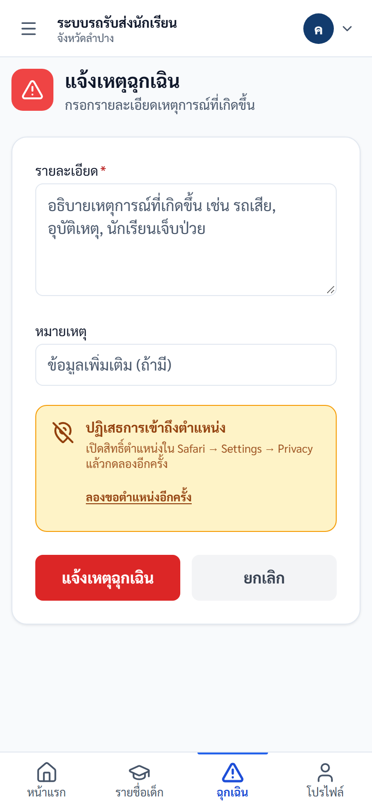
ภาพ: หน้าแจ้งเหตุฉุกเฉิน
ทำเสร็จแล้วจะเห็น: ข้อความ แจ้งเหตุฉุกเฉินแล้ว
ℹ️ ส่งได้แม้หาตำแหน่ง GPS ไม่ได้ ถ้ามือถือไม่ให้ใช้ตำแหน่ง ให้เปิดสิทธิ์ตำแหน่งในการตั้งค่าเบราว์เซอร์ แล้วกด ลองขอตำแหน่งอีกครั้ง
⚠️ ระวัง: ถ้ามีคนบาดเจ็บหรืออันตราย ให้โทรหาหน่วยกู้ภัยและโรงเรียนด้วย อย่ารอระบบเพียงอย่างเดียว
รายชื่อเด็กในรถ และแนบเอกสาร
ใช้เมื่อเริ่มใช้ระบบ หรือมีเด็กเข้า-ออกรถ บอกระบบว่าเด็กคนไหนขึ้นรถคุณ แล้วโรงเรียนจะตรวจและรับเข้าระบบ
เพิ่มชื่อเด็ก
- กดแท็บ รายชื่อเด็ก ที่แถบล่าง
- กดปุ่มฟ้า เพิ่มชื่อเด็ก
- ช่อง 1. ชื่อเด็ก พิมพ์ชื่อ-นามสกุล
- ช่อง 2. โรงเรียน แตะเลือกโรงเรียน
- ช่อง 3. ขึ้นรถรอบไหน เลือก เฉพาะเช้า / เฉพาะเย็น / เช้าและเย็น
- กด บันทึก
ถ้ารู้ชั้นหรือรหัสนักเรียน กด ใส่ชั้น/รหัสนักเรียน (ถ้าทราบ) ก่อนบันทึก (ไม่ใส่ก็ได้)
ทำเสร็จแล้วจะเห็น: ชื่อเด็กแยกตามโรงเรียน พร้อมป้าย รอโรงเรียนตรวจ (เหลือง) → โรงเรียนรับแล้ว (เขียว) หรือ ต้องแก้ไข (แดง)
- เพิ่มชื่อผิด กด ลบ ได้ จนกว่าโรงเรียนจะรับ ถ้าขึ้น "โรงเรียนรับแล้ว" ให้แจ้งโรงเรียนแทน
- เมื่อทุกโรงเรียนรับครบและรถผ่านการตรวจสภาพ จะขึ้นว่า รถพร้อมใช้งานแล้ว
แนบเอกสารรถและคนขับ (อยู่ด้านล่างของหน้าเดียวกัน)
- กด แนบเอกสาร
- เลือกชนิด: เล่มทะเบียนรถ / พ.ร.บ. / ป้ายภาษีรถ / ประกันภัยรถ / ใบขับขี่ / เอกสารอื่น ๆ
- ถ่ายรูปหรือเลือกไฟล์ (รูปหรือ PDF ไม่เกิน 5 MB)
ทำเสร็จแล้วจะเห็น: เอกสารในรายการ พร้อมป้าย รอตรวจ → ผ่านแล้ว หรือ ไม่ผ่าน — แนบใหม่ (มีเหตุผลบอกไว้ใต้ป้าย)
ติดตามการส่งตรวจรถ
เมนู ☰ → สถานะส่งตรวจรถ (หัวหน้าจอเขียนว่า "ขึ้นทะเบียนรถ")
- กด ยื่นคำขอ มุมขวาบน
- ช่อง เลือกรถ เลือกรถของคุณ
- กด ยื่นคำขอ
ทำเสร็จแล้วจะเห็น: คำขอใต้หัวข้อ คำขอที่ดำเนินการอยู่ สถานะ รอโรงเรียนตรวจสอบ แตะที่คำขอเพื่อดูรายละเอียดและไทม์ไลน์ กด รีเฟรช เพื่อดูสถานะล่าสุด
| สถานะ | แปลว่า |
|---|---|
| รอโรงเรียนตรวจสอบ | รอโรงเรียนดูคำขอ |
| พร้อมพิมพ์ | โรงเรียนตรวจแล้ว ถูกต้อง |
| ยื่นแล้ว | ส่งให้ขนส่งแล้ว |
| กำลังตรวจ | ขนส่งกำลังตรวจสภาพรถ |
| ผ่าน | รถผ่านการตรวจ |
| ต้องแก้ไข | แก้จุดที่ขนส่งบอก แล้วยื่นตรวจใหม่ |
| ไม่ผ่าน | รถไม่ผ่าน คำขอนี้ปิดแล้ว |
| โรงเรียนปฏิเสธ | ถามเหตุผลจากโรงเรียน |
| ยกเลิก | คำขอถูกยกเลิก |
ถ้าไม่เห็นปุ่ม ยื่นคำขอ และขึ้นว่า "คุณยังไม่มีรถที่ได้รับอนุญาต" ให้ติดต่อโรงเรียน
แผนที่จุดรับส่ง
เมนู ☰ → แผนที่จุดรับส่ง ใช้ดูหรือเพิ่มจุดรับ-ส่งของรถคุณ
- กดปุ่มฟ้า + เพิ่ม (บนคอมพิวเตอร์เขียนว่า เพิ่มจุดรับส่ง)
- พิมพ์ ป้ายชื่อจุด เช่น "หน้าวัด"
- แตะบนแผนที่ตรงจุดนั้น (หรือพิมพ์ Latitude/Longitude)
- เลือกรอบ: รอบเช้า / รอบเย็น / ทั้งวัน
- ติ๊กชื่อเด็กที่ขึ้นลงจุดนี้
- กด บันทึก
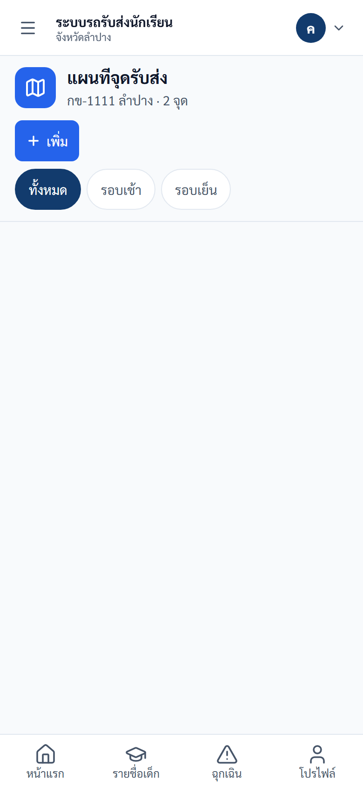
ภาพ: แผนที่จุดรับส่ง
ทำเสร็จแล้วจะเห็น: จุดใหม่บนแผนที่ ที่การ์ดของจุดมีปุ่ม แก้ไขรายชื่อนักเรียน และ เปิดใน Google Maps →
💡 เคล็ดลับ: เลือกรอบก่อนแล้วค่อยติ๊กชื่อ เพราะเปลี่ยนรอบแล้วรายชื่อจะโหลดใหม่ เด็กที่มีจุดในรอบนั้นแล้วจะไม่ขึ้นในรายการ
แก้ข้อมูลของคุณ
- กดแท็บ โปรไฟล์ ที่แถบล่าง (หน้า "ข้อมูลคนขับและรถ")
- กด แก้ไขข้อมูล แก้ชื่อ เบอร์โทร ฯลฯ แล้วบันทึก
- เปลี่ยนรูป: กด เปลี่ยนรูป เลือกรูป JPG, PNG หรือ WebP ไม่เกิน 2 MB
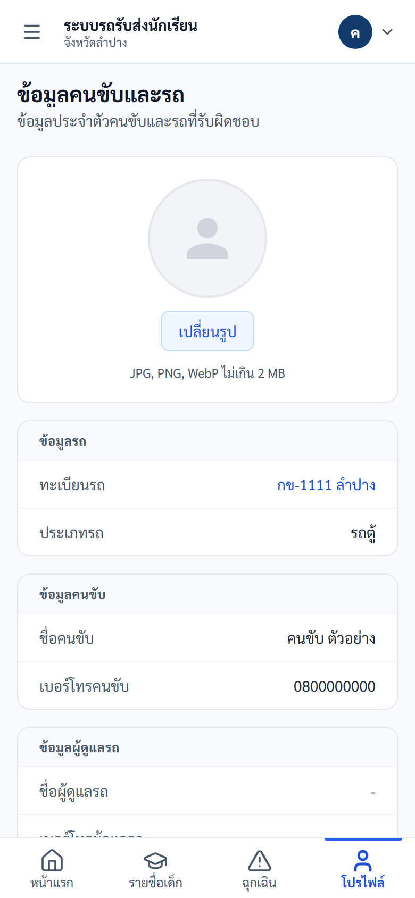
ภาพ: หน้าข้อมูลคนขับและรถ (เบลอเพราะมีข้อมูลส่วนตัว)
ทะเบียนรถแก้จากหน้านี้ไม่ได้ ถ้าต้องเปลี่ยนให้แจ้งโรงเรียน
เปลี่ยนรหัสผ่าน
- กดแท็บ โปรไฟล์ แล้วไปที่ส่วน เปลี่ยนรหัสผ่าน (หรือแตะรูปวงกลมมุมขวาบน → เปลี่ยนรหัสผ่าน)
- พิมพ์รหัสเดิม
- พิมพ์รหัสใหม่ อย่างน้อย 8 ตัวอักษร และพิมพ์ซ้ำให้ตรงกัน
- กด เปลี่ยนรหัสผ่าน
ทำเสร็จแล้วจะเห็น: ข้อความ เปลี่ยนรหัสผ่านสำเร็จ แล้วอาจต้องเข้าสู่ระบบใหม่
ออกจากระบบ
- แตะรูปวงกลมมุมขวาบน
- กด ออกจากระบบ
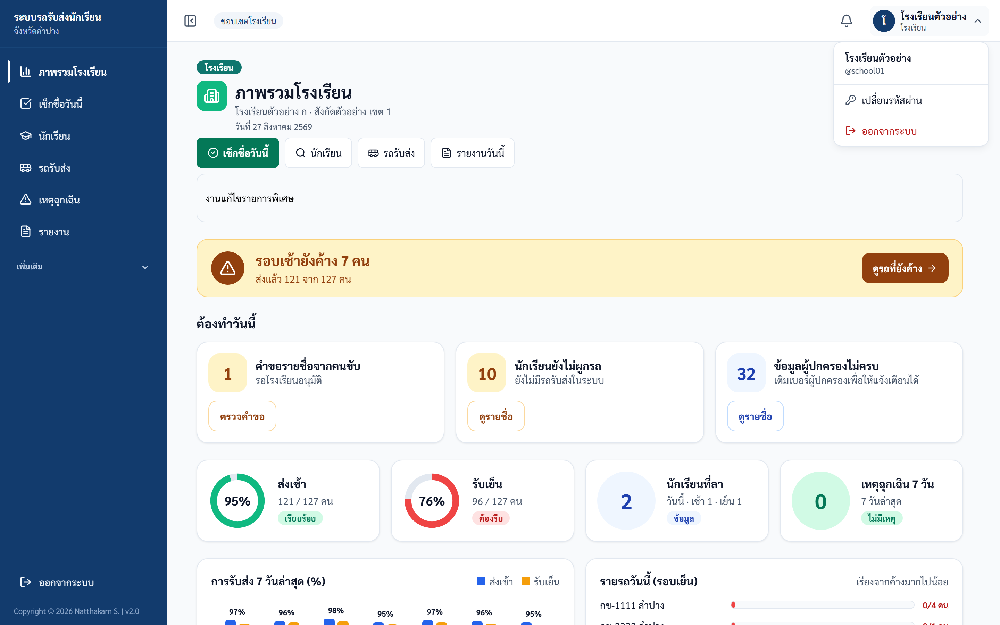
ภาพ: เมนูมุมขวาบน (ภาพจากบัญชีโรงเรียน ของคนขับมีรายการเหมือนกัน)
ทำเสร็จแล้วจะเห็น: หน้าเข้าสู่ระบบ และการส่งตำแหน่งรถหยุดทันที
เรื่องที่ต้องมีส่วนร่วม (ยื่นข้อเสนอหรือข้อกังวล)
ใช้ยื่นข้อเสนอ ปัญหาการให้บริการ หรือข้อกังวลเรื่องความปลอดภัย เป็นลายลักษณ์อักษร และติดตามผล ไม่ใช่ช่องทางแจ้งเหตุด่วน เหตุด่วนให้ใช้ "แจ้งเหตุฉุกเฉิน"
- เมนู ☰ → เรื่องที่ต้องมีส่วนร่วม (อยู่บนสุดของเมนู)
- กด ยื่นเรื่องใหม่
- เลือก ประเภทเรื่อง
- พิมพ์ หัวเรื่อง (ต้องกรอก) และ รายละเอียด
- เลือก ขอบเขตของเรื่อง (โรงเรียน / สังกัด / จังหวัด / ขนส่ง)
- ถ้าไม่ได้เลือก "จังหวัด" ให้พิมพ์ รหัสหน่วยงาน เช่น SCH0001 (ไม่รู้รหัสให้ถามโรงเรียนก่อน)
- กด ยื่นเรื่อง
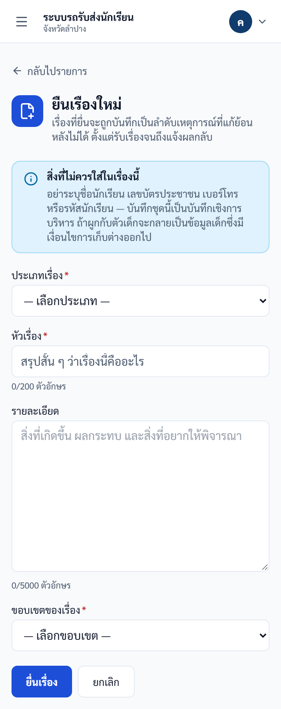
ภาพ: แบบฟอร์มยื่นเรื่องใหม่
ทำเสร็จแล้วจะเห็น: หน้ารายละเอียดเรื่อง มีเลขที่เรื่องขึ้นต้นด้วย PC- และสถานะ ยื่นเรื่องแล้ว
- ดูเรื่องเดิม: เปิดเมนูเดิม จะเห็นเฉพาะเรื่องที่คุณยื่นเอง กด ดูรายละเอียด ที่เรื่องนั้น
- ไม่ต้องการดำเนินเรื่องต่อ: ในหน้ารายละเอียด เลือกเหตุการณ์ ถอนเรื่อง
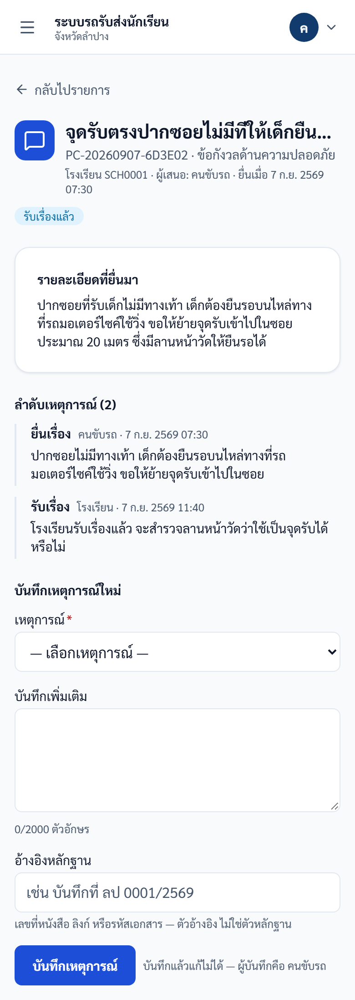
ภาพ: หน้ารายละเอียดเรื่อง — "ลำดับเหตุการณ์" อ่านจากบนลงล่าง
⚠️ ระวัง: ห้ามพิมพ์ชื่อนักเรียน เลขบัตรประชาชน รหัสนักเรียน หรือเบอร์โทร ลงในเรื่อง
บันทึกแล้วแก้หรือลบไม่ได้ พิมพ์ผิดให้เพิ่มเหตุการณ์ ให้ความเห็น เพื่อเขียนแก้ ถ้ารหัสหน่วยงานผิด ต้องยื่นเรื่องใหม่
ระบบไม่ส่งแจ้งเตือนให้ใคร ต้องเข้ามาดูความคืบหน้าเอง ถ้าเร่งด่วนให้แจ้งโรงเรียนโดยตรงด้วย
ประกาศเรื่องการใช้ข้อมูล
ถ้ามีหน้าต่างประกาศขึ้นมา อ่านแล้วกด รับทราบ (หรือ อ่านภายหลัง) ดูประกาศย้อนหลังได้ที่เมนู ☰ → นโยบายและสิทธิของฉัน
ปัญหาที่พบบ่อย
| ถ้าเห็น/ถ้าเกิด | ให้ทำแบบนี้ |
|---|---|
| "ชื่อผู้ใช้หรือรหัสผ่านไม่ถูกต้อง" | ตรวจทะเบียนรถ (เว้นวรรค/ขีด) และรหัสผ่าน แล้วลองใหม่ ถ้ายังไม่ได้ ให้แจ้งโรงเรียน |
| "มีการพยายามเข้าสู่ระบบหลายครั้งจากเครือข่ายนี้" | รอประมาณ 15 นาที แล้วลองใหม่ บัญชีไม่ได้ถูกปิด |
| "บัญชีนี้ถูกปิดการใช้งาน" | ติดต่อโรงเรียน |
| "บัญชีนี้ยังไม่ได้ผูกกับรถ" | แจ้งโรงเรียน พร้อมชื่อผู้ใช้และทะเบียนรถ แล้วกด ตรวจสอบอีกครั้ง |
| "กรุณาตรวจรถก่อนออกก่อนเช็กชื่อ" | ทำ "ตรวจรถก่อนออก" ของวันนี้ให้เสร็จก่อน |
| "รายการนี้ถูกบันทึกไปแล้ว" | บันทึกไปแล้ว (โดยคุณหรือครู) ไม่ต้องกดอีก ข้ามไปคนถัดไป |
| "นักเรียนถูกส่งแล้วในรอบนี้ — ไม่สามารถเช็กอินซ้ำได้" | เด็กคนนี้บันทึกลงรถไปแล้ว ถ้าผิดให้แจ้งโรงเรียน |
| กดผิด อยากแก้สถานะเช็กชื่อ | แก้เองไม่ได้ แจ้งโรงเรียนให้แก้ให้ |
| "ยังไม่มีนักเรียนในรถคันนี้" | ใส่ชื่อเด็กที่แท็บ รายชื่อเด็ก หรือติดต่อโรงเรียน |
| เพิ่มชื่อเด็กแล้ว ยังไม่ขึ้นในหน้าเช็กชื่อ | รอโรงเรียนรับ (ป้าย "โรงเรียนรับแล้ว") ก่อน |
| ป้ายส่งตำแหน่งขึ้นว่า "ไม่ได้รับอนุญาตตำแหน่ง" | เปิดสิทธิ์ตำแหน่งของเบราว์เซอร์ในการตั้งค่ามือถือ แล้วกด เริ่มส่งตำแหน่ง ใหม่ |
| ป้ายขึ้นว่า "ไม่พบสัญญาณตำแหน่ง" หรือความแม่นยำต่ำ | เปิด GPS ของมือถือ และอยู่ที่โล่ง |
| ป้ายขึ้นว่า "อุปกรณ์ออฟไลน์" หรือเช็กชื่อไม่ได้เพราะเน็ตหลุด | ระบบต้องใช้อินเทอร์เน็ต รอสัญญาณกลับมาแล้วลองใหม่ |
| หาเมนู "แผนที่จุดรับส่ง" หรือ "สถานะส่งตรวจรถ" ไม่เจอ | กดปุ่ม ☰ มุมซ้ายบน (ถ้าไม่เห็นเมนูในกลุ่ม ให้แตะชื่อกลุ่ม งานดำเนินการ เพื่อกางออก) |
| พยายามเปิดหน้าของบทบาทอื่น | คนขับเห็นเฉพาะเมนูของคนขับ กลับไปที่ หน้าแรก |
ติดต่อใครเมื่อมีปัญหา
- รหัสผ่าน บัญชี ผูกรถ แก้สถานะเช็กชื่อ รายชื่อเด็ก → เจ้าหน้าที่โรงเรียนที่คุณรับส่งนักเรียน
- ผลตรวจสภาพรถ → สำนักงานขนส่ง หรือโรงเรียน
- เหตุร้ายที่มีคนบาดเจ็บ → โทรหน่วยกู้ภัยและโรงเรียนทันที แล้วกด ฉุกเฉิน ในระบบ
สิ่งที่ต้องบอกเมื่อแจ้งปัญหา:
- ทะเบียนรถ
- เวลาที่เกิดปัญหา
- ข้อความที่ขึ้นบนจอ (ถ่ายภาพหน้าจอได้ยิ่งดี)
- ตอนนั้นใช้เน็ตมือถือหรือ Wi-Fi
ข้อควรระวังเรื่องข้อมูลนักเรียน
- อย่าบอกรหัสผ่านกับใคร และอย่าให้คนอื่นใช้บัญชีของคุณ
- ห้ามถ่ายภาพหน้าจอรายชื่อเด็กส่งต่อในกลุ่มแชตหรือโซเชียล
- เลิกใช้งานบนเครื่องที่ใช้ร่วมกับคนอื่น ให้กด ออกจากระบบ ทุกครั้ง
- ห้ามพิมพ์ชื่อเด็ก เลขบัตรประชาชน หรือเบอร์โทร ในช่องข้อความที่ไม่ได้มีไว้สำหรับข้อมูลนั้น
ตรวจความเข้าใจหลังอบรม
- ☐ เข้าสู่ระบบด้วยทะเบียนรถได้
- ☐ ตรวจรถก่อนออกได้ ทั้งแบบปกติและแบบมีรายการผิดปกติ
- ☐ เริ่มและหยุดส่งตำแหน่งรถได้
- ☐ เช็กชื่อทั้งคัน และเช็กทีละคนได้
- ☐ บันทึกลา และยกเลิกการลาได้
- ☐ กดจบรอบได้
- ☐ รู้ว่าปุ่มฉุกเฉินอยู่ตรงไหน
- ☐ เพิ่มชื่อเด็กและแนบเอกสารได้
- ☐ เปลี่ยนรหัสผ่านและออกจากระบบได้
ℹ️ หน้า "เลือกรถและเริ่มรอบ" ยังไม่เปิดใช้งาน ไม่ต้องตามหา ระบบรู้เองว่าคุณขับรถคันไหน